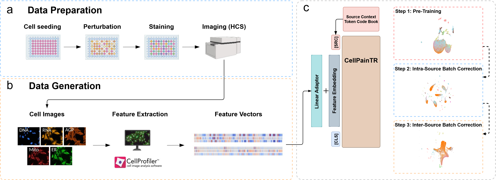

The Challenge: A "Tower of Babel" in Biological Data
Cell Painting is a powerful technique that allows scientists to see how cells react to drugs and genetic changes, generating rich, detailed images. Large-scale projects like the JUMP Cell Painting consortium are creating massive datasets with the goal of building a unified "atlas" of cellular biology.
However, a critical roadblock prevents this: batch effects. These are non-biological variations that arise from differences in labs, equipment, and even day-to-day conditions. They act like different "dialects," distorting the data and making it nearly impossible to compare experiments from different sources. Traditional correction methods like ComBat and Harmony can clean up a static dataset, but they can't generalize. If new data arrives, the entire process must start over, making a truly scalable atlas impossible.
Our Solution: CellPainTR, A Generalizable Transformer
To solve this, we developed CellPainTR, a Transformer-based model designed not just to correct data, but to learn a universal, foundational understanding of cellular morphology. It learns a representation that is robust to batch effects, allowing for true cross-study analysis.

The CellPainTR Framework. Our model (c) takes the feature vectors generated by standard Cell Painting analysis (a, b) and learns a corrected, generalizable representation. The key is the learnable "source context token," which teaches the model about the data's origin, allowing it to disentangle technical noise from true biology.
The Training Curriculum: A Three-Step Journey
We train CellPainTR using a carefully designed three-step curriculum to systematically build its understanding.
Step 1 (Self-Supervised Pre-training): The model first learns the fundamental grammar of cellular morphology by predicting masked features, similar to how language models like BERT learn language.
Step 2 (Intra-Source Fine-tuning): Using contrastive learning, the model learns to group similar biological signals together while ignoring noise (like plate-to-plate variation) within a single data source.
Step 3 (Inter-Source Generalization): In the final stage, the model is shown data from multiple sources at once. It learns to create a globally consistent representation, effectively translating all data "dialects" into a single, universal language.
The model is progressively trained, first learning general features via reconstruction (Step 1), then refining its understanding within single sources (Step 2), and finally learning a source-invariant representation by mixing data from multiple sources (Step 3).
Results: State-of-the-Art Performance and True Generalization
On the large-scale JUMP dataset, CellPainTR achieved state-of-the-art performance, demonstrating a superior balance of removing batch effects while preserving the important biological signals. The visualizations below show how the uncorrected data (left) is completely separated by its source (bottom row). After our full training process (right), the sources are seamlessly integrated, while the distinct biological categories (MoA, top row) remain clearly defined.
Visual Proof. Top row is colored by biological class (MoA), bottom by data source. The final CellPainTR model (right) successfully mixes the sources while keeping the biological clusters distinct.
The Critical Test: Out-of-Distribution Performance
The true measure of a foundational model is its ability to work on data it has never seen before. We tested CellPainTR on the Bray et al. (2017) dataset—a completely new dataset from a different lab with a different data structure. Without any retraining or fine-tuning, CellPainTR dramatically outperformed all baseline methods, including those that were re-fit specifically for this new data. This powerful result shows that CellPainTR learns a truly robust and generalizable representation of cellular morphology.
Broader Impact: Towards a "Cell-BERT" for Biology
CellPainTR is a proof-of-concept for a new class of models in computational biology. Its ability to generalize suggests we can build a universal, pre-trained model for cellular morphology—a "Cell-BERT"—that could serve as a standard reference for the entire field. Researchers could process new, smaller-scale experiments through this model to instantly place their findings into the context of a massive, unified biological atlas. This would dramatically accelerate discovery and lower the barrier to entry for robust, cross-study analysis.
Code & Resources
The complete source code and instructions to reproduce our results are available on GitHub.